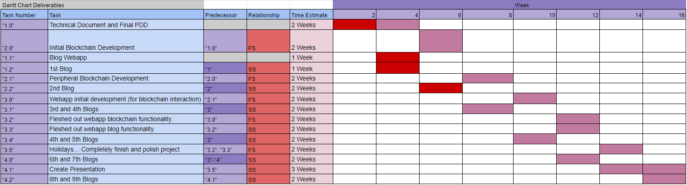
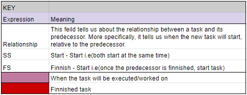

Progress Chart
Welcome to the second progress entry of logichain!
Important Updates
Since the last progress entry, here are the most pressing updates:Progress entries will now be produced every week.The blockchain will now be utilizing XRP's rippled network.
Heres the latest gaant chart updates.
 Challenges
Honestly, I found this fortnight very challenging, for starters, lockdown disrupted my school work and I was sort of thrown off track by the decision to pivot to an XRP ledger, this was followed by the entire last weekend spent doing a coding competition. The largest challenge was undoubtedly the XRP pivot, it swept me off my feet and has stopped me from doing other work for the entire week because I have been busy reading XRP’s documentation and setting up the testnet (which i no longer need). Honestly I think that these are some pretty intense setbacks, but it’s nothing i won't overcome, i am determined to score very well on this assessment and will make sure that happens.
Solution
I think I need to really concentrate on finding out exactly how XRP is going to affect my project and make the appropriate adjustments to the technical document so that I can get straight to development. If i don't start production soon I will definitely not have a good enough product for the prototype so I am going to put my other school subjects on the backburner for now.
Timeline of Progress
12/8/21
Today is my first day working on this project since my last entry. I have sent an email to the IBM food supply chain (IBM food trust) asking them questions about their consensus algorithm and integrity verification. While I wait on a response I will postpone work on documentation of the consensus algorithm and instead work on the technical documentation for the foundation of the blockchain.
Today also marks the first day of COVID-19 lockdown in Canberra since 2020, while this is a terrible virus which is endangering people, it may be beneficial for the production of this project. I will have much more time to focus on getting this blockchain ready for a prototype which is due in about a month.
15/8/21
Just as I was getting to finishing the technical document, we have had a huge pivot in the production of the blockchain, I am no longer going to be building the blockchain from the ground up. Instead, we will be using XRP’s parallel test chain to facilitate all the data and smart contracts. This will be better in the long run as we will have better, more stable infrastructure, quicker transactions and a really nice end product.
As of today, I am setting up a ‘rippled’ node on a VM to host a test network.
18/8/21
I have had a somewhat unproductive few days, I am yet to get the testnet up and running, I know this may just end up creating a negative feedback loop of wasting time so i'm going to have a really solid go and if that doesn't work, im just going to settle for the public test net.
23/8/21
Hello, sadly it has been 5 days since my last update because for the entire weekend, I have been doing the GovHack coding competition. My team of 5 and I built an entire blockchain for the purpose of promoting safety and stability in transactions with wealthy corporations. Which is very close to the project I am doing here with logichain, so I think in a way, GovHack will prove to be beneficial for my overall understanding of logichain’s blockchain.
There is currently less than 2 weeks until the prototype of the project is due, im not sure whether or not ill have a good project running by that time, however I believe that ill be able to make it happen regardless.
As for project direction right now, I have decided on using a public XRP testnet, so I need to speed through the rest of the technical document because I am about 2 weeks behind schedule because of it. I will say though, the better this technical doc is i.e. the more time i spend on it, the easier the development will be.